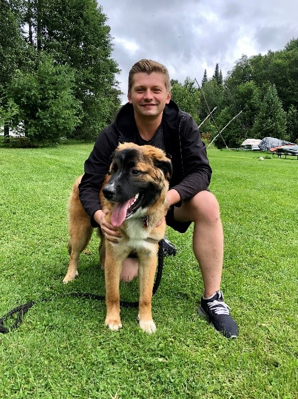

About me
Hi, my name is Segre! It's a pleasure to meet you! I relocated to Canada approximately six years ago and have been residing in Toronto ever since. By the way, the picture below features me at a fascinating and forbidden mine located somewhere in Boulter, Ontario. It's truly an exciting place, I must say.
I was born in the capital city of Ukraine, Kyiv. After completing high school, I pursued my passion for cooking by attending culinary college. Becoming a chef was always my dream. However, in my hometown, there weren't any universities offering comprehensive programs specifically tailored to chef training. I had to choose the closest available option to pursue my aspirations. The culinary college taught me the fundamental skills, but nothing too extravagant. It was when I secured my first job at a French restaurant that I truly learned the art of cooking exquisite cuisine. At the young age of twenty, I even became a head chef. My culinary passion paved the way for a successful career as I worked in some of the finest restaurants in my city.
While I deeply love Ukraine, the local economic situation wasn't favorable. That led me to make the decision to move to Canada. The immigration process proved to be one of the most challenging aspects of my plan, but I eventually succeeded. Allow me to briefly explain what prompted me to change my career path. During the immigration process, the pandemic struck, limiting my options significantly. However, one industry that remained largely unaffected by lockdowns was construction. Consequently, I transitioned into the field of roofing. Many perceive it as a difficult and unpleasant job, but I strongly disagree. It can be a rewarding profession, especially when working for a reputable company or running your own business.
Nevertheless, this experience served as an eye-opener for me. I realized that there are abundant opportunities available, sometimes obscured by our daily routines. It's crucial to pause for a moment and take a look around, as we may discover unexpected avenues for growth and fulfillment.